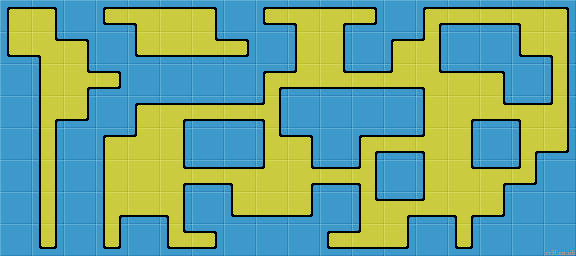
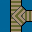
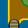
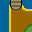
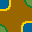
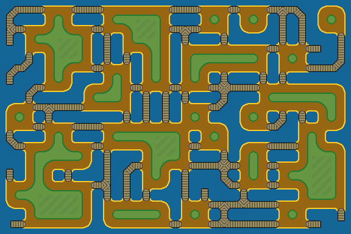

Blob Tileset
A Blob tileset is a 47 tile subset of a 2-edge 2-corner Wang tileset.
2-edge + 2-corner Wang Tiles
With two different types of edge and two different types of corner, we have 2^8 or 256 different tiles in a complete tileset. The tileset forms the basis of some tile matching puzzles. |
|
Generally though 256 tiles is too many to produce and use. However, there is an interesting subset of 47 tiles, known as 'Blob' tiles. So called, because each tile has a central 'blob' of land or carpet, aulthough tile_0 is often depicted without for artistic reasons. These can be used to tile room, terrain or carpet areas. They have a border (wall or fence) with internal as well as the usual external corners.
Here is the Blob tileset. Below each tile, all possible 90 degree rotations (clockwise) are shown. Each is 4x the previous index, (mod 255).
| 0 | 1 | 5 | 7 | 17 | 21 | 23 | 29 | 31 | 85 | 87 | 95 | 119 | 127 | 255 |
| 4 16 64 |
20 80 65 |
28 112 193 |
68 | 84 81 69 |
92 113 197 |
116 209 71 |
124 241 199 |
93 117 213 |
125 245 215 |
221 | 253 247 223 |
You can see we have two different types of edge or corner (yellow or blue). But there is always a large central blob of yellow. So we can create yellow carpets on blue floors but not blue carpets on yellow floors. Note that no tile has a blue edge between two yellow corners. If either corner is yellow then the edge centre is yellow.
Bitwise Tile IndexThe following method provides a unique index number for each tile. Add up the yellow edges or corners, (ignore blue), with the following binary weightings: North edge = 1 |
This tile has 'North' + 'NorthEast' + 'East' + 'West', or 1 + 2 + 4 + 64 , giving an index of '71'. |
Applying weightings in a continuous clockwise cycle allows easy tile rotation. Simply multiply the index by 4 to rotate clockwise by 90°. If greater than 255 subtract 256, like clock arithmetic. Similarly, sprites can easily calculate exits, or rotate to face different allowable exit directions.
Here is a typical yellow carpet on blue background layout, showing internal and external corners.
Stage: Blob tileset - Carpet layout
Note that the center of every tile is yellow (except for all blue tile_0). So you can't make a blue carpet on a yellow background with this Blob tileset. However 47 tiles is a lot less than 256.
Minimum Packing
We can pack the complete tileset into a 6x8 array with just a single duplicate of the 'solid' tile-255. Or a 7x7 array with 3 copies of the empty tile-0.
Both these minimum packing layouts were discovered by Caeles at OpenGameArt.org using an exhaustive computer search of all possible tile arrangements. Many thanks Caeles - great work.
See the other tilesets in 7x7 arrangement.
|
|


Islands Tileset
Here is a more artistic 'island' tileset, with boardwalk connections.
|  |  |  |  | |||||||||||
| 0 | 1 | 5 | 7 | 17 | 21 | 23 | 29 | 31 | 85 | 87 | 95 | 119 | 127 | 255 |
| 4 16 64 |
20 80 65 |
28 112 193 |
68 | 84 81 69 |
92 113 197 |
116 209 71 |
124 241 199 |
93 117 213 |
125 245 215 |
221 | 253 247 223 |
We can use this tileset to create the following layout. Much more maze like.
See Stage to generate your own random islands.
Stage: Random - Blob Tileset - Islands
The tileset produces a clump of random islands interlinked with boardwalks. There is no guarantee that every island is reachable when randomly generated. However, if the array is generated using the maze, then it is 'perfect' and every island is reachable from any other island.
 |
Reduction Methods
The clever thing about Blob tilesets is there exists easy and reliable methods to reduce the 256 tiles down to 47. Here are two different reduction methods. They are selectable with the checkbox below the [Stage] Blob menu.
There is also a third
method which is to generate a perfect maze. See mazes.
This diagram may help. It shows a layout of 12 blue tiles, 4 wide by 3 high (the black outline). Each tile has a center (yellow square), 4 corners (red circles) and 4 edges (green rectangles). The tiles overlay a data array, (white outline), where each tile center, edge and corner is held in a corresponding cell. The data array needs to be 'twice plus 1' the width and height of the tile array. So 4x3 tiles require 9x7 cells. |
 |
Method 1
The above 'island' image was produced by the following procedure:
1/ Fill all edge and corner cells with a random '0' or '1'.
For each tile, if the edge is a '0' then make both the corners, either side of the edge a '0' as well. So…
2/ Step through the array, visiting the top and left edge of each tile. If this is '0' then set both corners either side to '0'.
// if top = 0: topLeft = 0, topRight = 0
// if left = 0: topLeft = 0, bottomLeft = 0
Calculate the index for each tile. Here are all the tiles with their index numbers. Each tile rotation is 4x the previous index number, (mod 255).
| 0 | 1 | 5 | 7 | 17 | 21 | 23 | 29 | 31 | 85 | 87 | 95 | 119 | 127 | 255 |
| 4 16 64 |
20 80 65 |
28 112 193 |
68 | 84 81 69 |
92 113 197 |
116 209 71 |
124 241 199 |
93 117 213 |
125 245 215 |
221 | 253 247 223 |
5/ Step through the array again, only visiting the tile centers. Add up the corner and edge cells with the following weightings:
Index = top + 2*topRight + 4*right + 8*bottomRight + 16*bottom + 32*bottomLeft + 64*left + 128* topLeft You should end up with an index of one of 47 numbers. This represents the correct tile to be used. As an optional step, I also remove 90% of all the 1x1 holes which form at the tile corners. Looks much better. |
|
Method 2
This second method creates a slightly different layout, using the same 47 Blob tiles.
1/ Create an array as above method 1 and fill with '0's.
2/ Fill each tile center with a random '0' or '1'.
3/ Visit every edge cell. If the tiles either side are both '1', then make the edge a '1'.
4/ Visit every corner cell. If it is surrounded by 4 edges which are all '1', (or 4 tiles all '1') then make the corner cell a '1'.
5/
Blob tilesets make good room layouts. To ensure all rooms are connected, use the Maze generator function with the [Stage] tile explorer. This guarantees all areas are reachable. Stage: Maze - Blob Tileset - CommuneProcedural Dungeon Creation